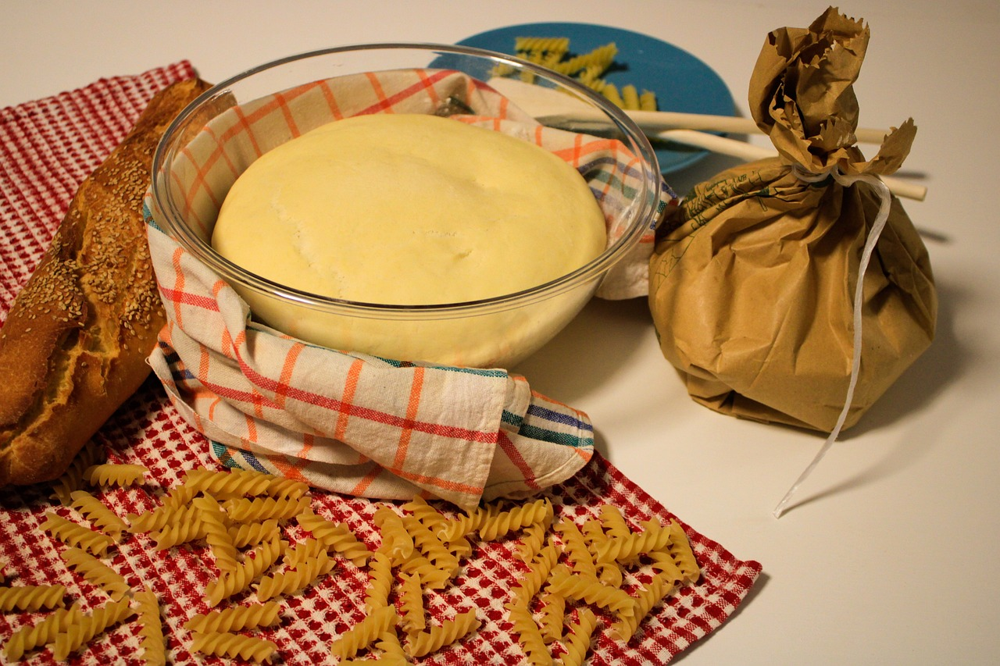
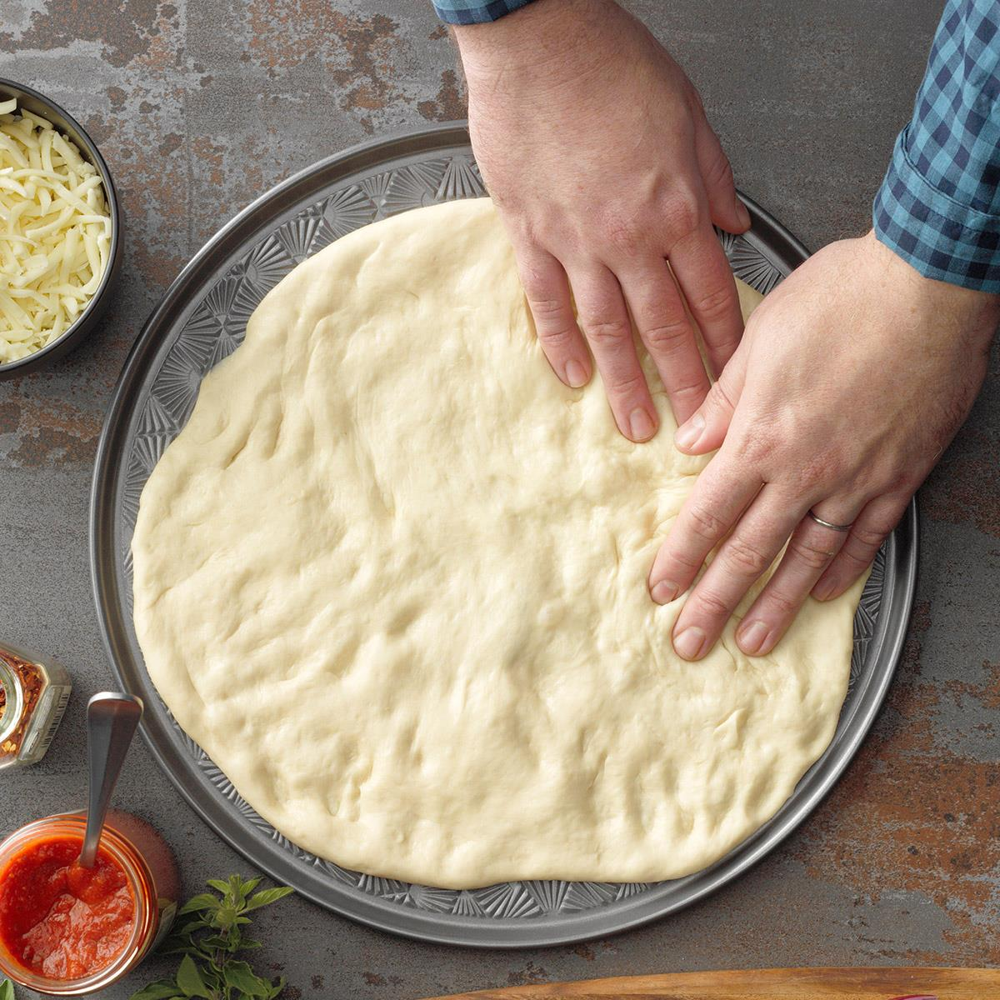
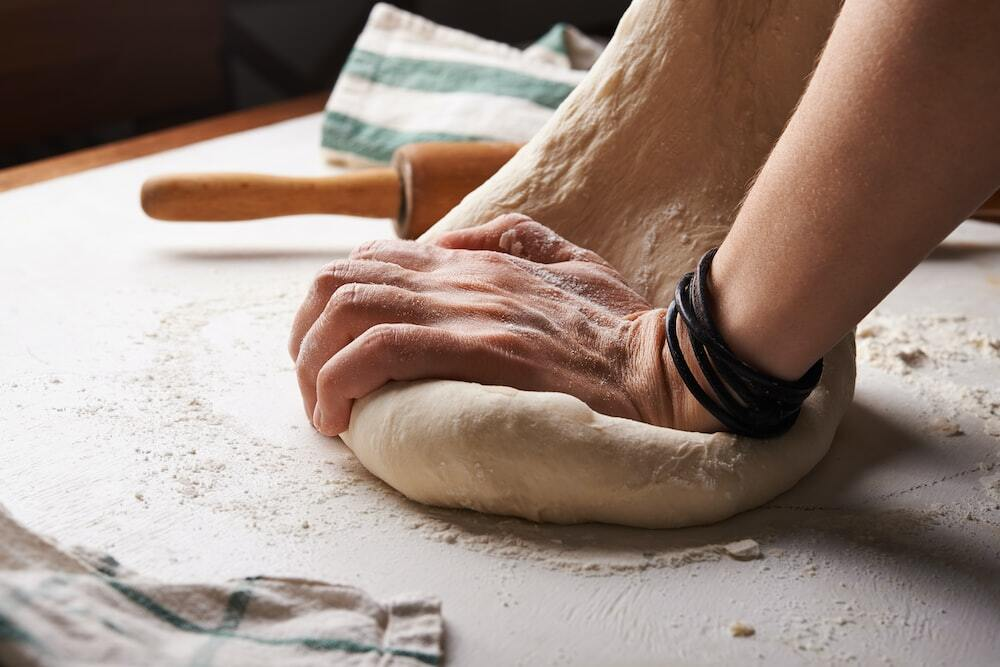
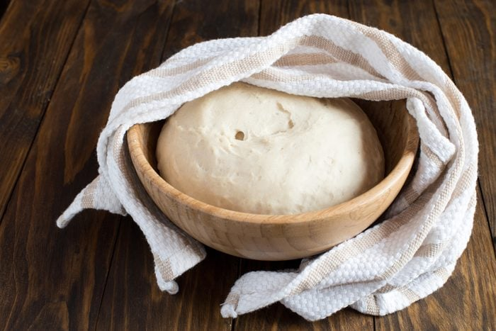
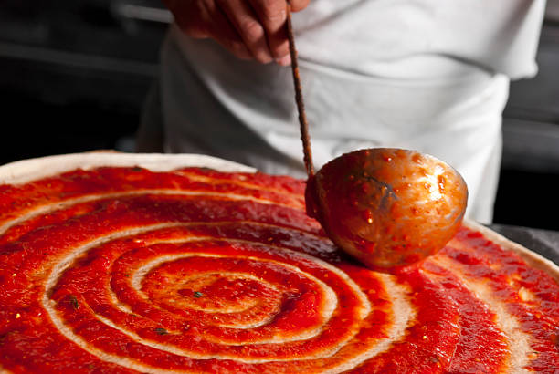

Pizza is one of the most popular and delicious dishes in the world. It is easy to make and can be customized with your favorite toppings. In this webpage, you will learn how to make a pizza from scratch using simple ingredients and tools.
Ingredients
To make a pizza, you will need the following ingredients:
1/4 cup of warm water
2 teaspoons of active dry yeast
3 cups of all-purpose flour
1 teaspoon of salt
2 tablespoons of olive oil
1 cup of pizza sauce
2 cups of shredded mozzarella cheese
Your choice of toppings (such as pepperoni, mushrooms, olives, etc.)
Tools
To make a pizza, you will need the following tools:
A large bowl
A measuring cup and spoons
A wooden spoon or a mixer
A rolling pin or a bottle
A baking sheet or a pizza pan
An oven
Steps
Follow these steps to make a pizza:
In a large bowl, stir together the warm water and the yeast. Let it sit for about 10 minutes until it becomes foamy.

Add the flour, salt, and olive oil to the yeast mixture. Mix well with a wooden spoon or a mixer until a smooth dough forms.

Turn the dough out onto a lightly floured surface and knead it for about 15 minutes until it is elastic and smooth.

Place the dough in a greased bowl and cover it with a damp cloth. Let it rise in a warm place for about an hour until it doubles in size.

Punch down the dough and divide it into two equal parts. Roll out each part into a thin circle that fits your baking sheet or pizza pan.
Preheat your oven to 375°F (190°C). Transfer the dough circles to your baking sheet or pizza pan and spread the pizza sauce evenly over them.

Sprinkle the cheese over the sauce and add your toppings as desired.
Bake your pizzas for about 15 to 20 minutes until the cheese is melted and bubbly and the crust is golden brown.